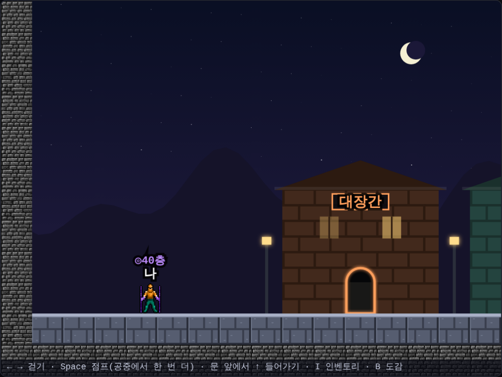
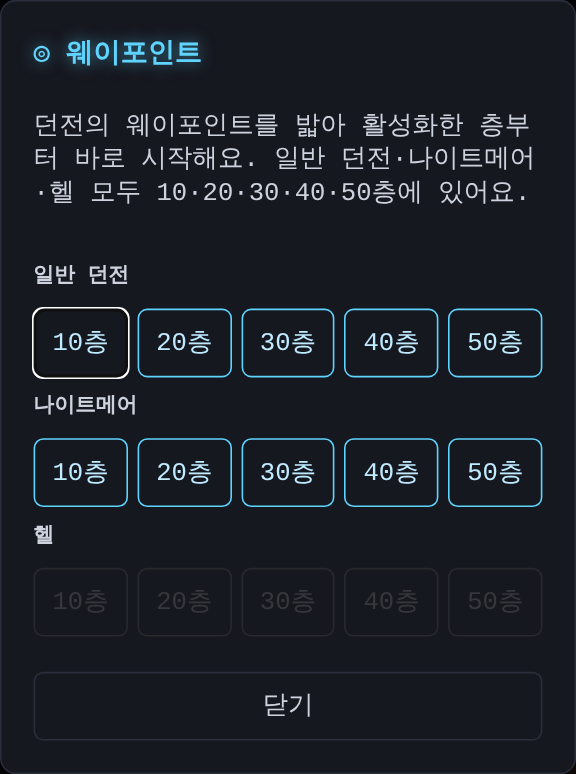
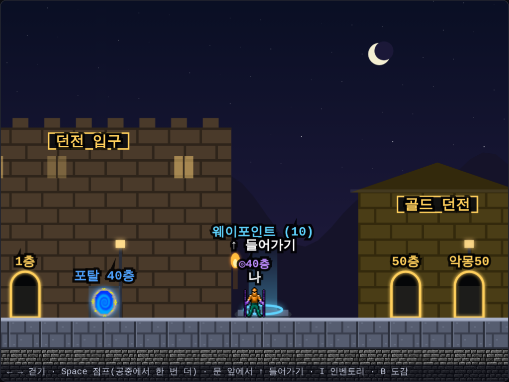
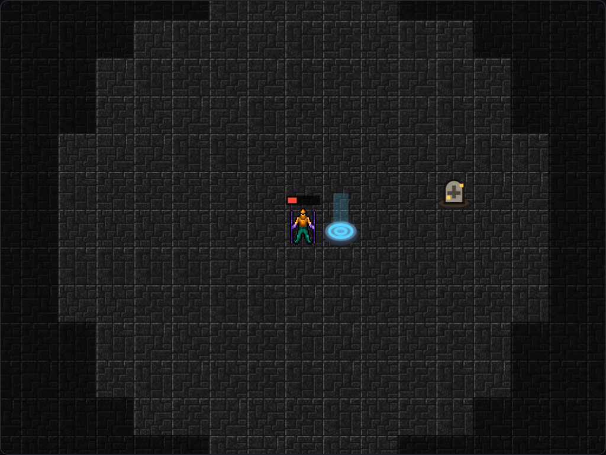
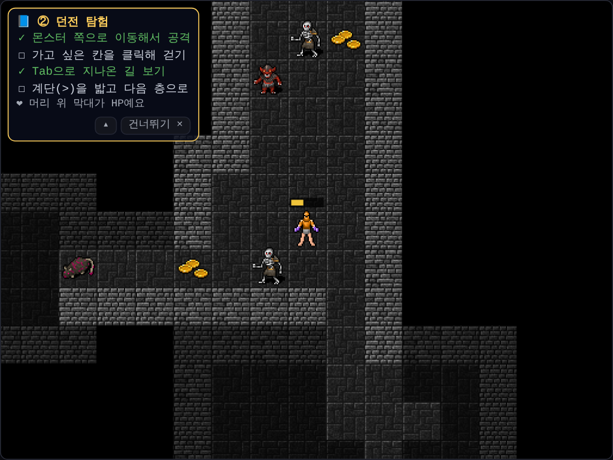
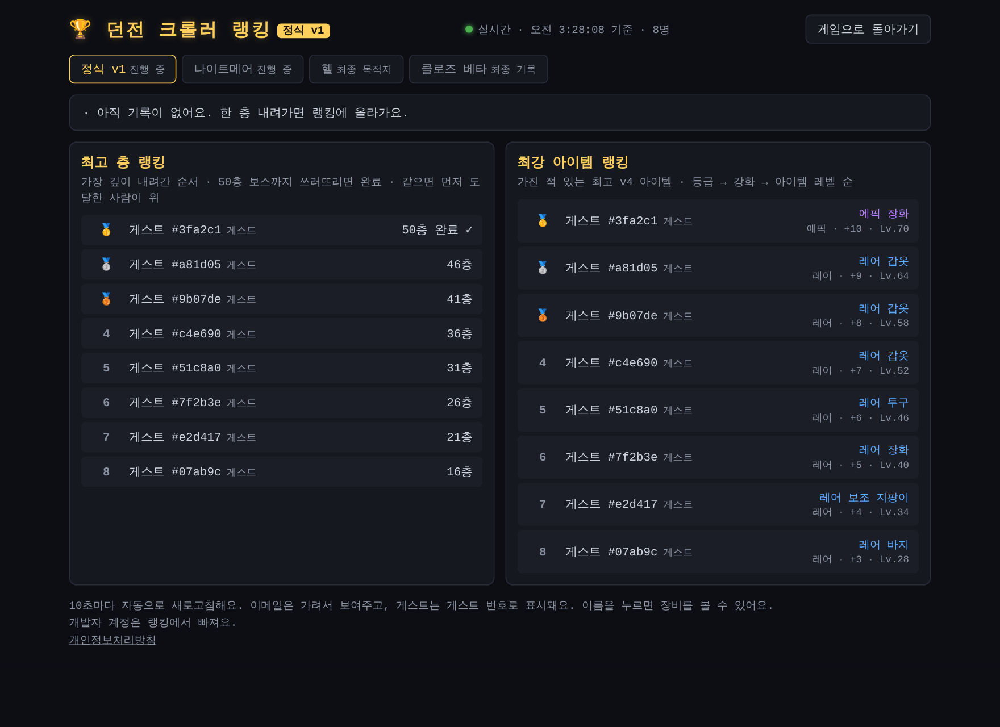
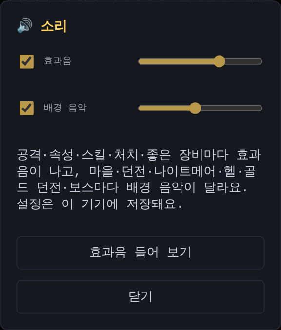
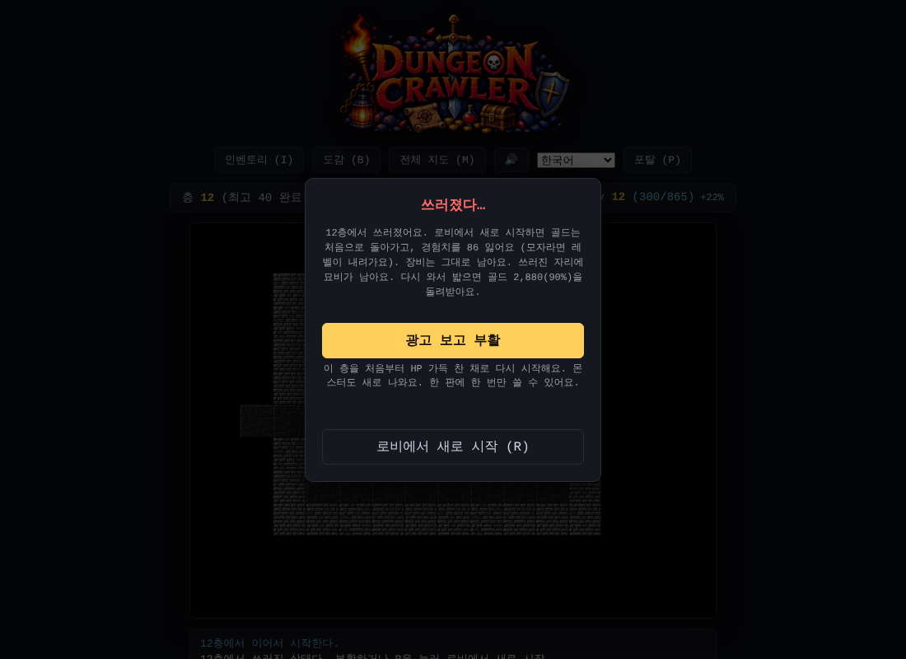

점프 던전은 쉬고, 웨이포인트·묘비, 50층 정식 v1, 소리, 그리고 게임 포털 준비
며칠 전 마을 왼쪽 끝에 "점프 던전"을 열었어요. 던전을 옆에서 보며 실시간으로 뛰어다니고 더블 점프로 발판을 오르내리며 몬스터를 잡는 시험판이었어요.
그런데 해 본 사람들의 평가가 좋지 않았어요.
마을에서 점프 던전 건물을 치웠어요
- 마을 왼쪽 끝의 점프 던전 건물과 간판, 문이 이제 보이지 않아요
- 그 자리는 빈 거리라서 문 앞에서 위로 눌러도 들어가지 않아요
- 옆에서 보는 마을 자체는 그대로예요. 걷기, 더블 점프, 문 앞에서 들어가기도 지금처럼 돼요

지우지 않고 남겨 둔 이유
점프 던전의 물리, 몬스터 움직임, 스킬 효과는 코드에 그대로 남겨 뒀어요. 피드백을 반영해 더 다듬으면 다시 열 수 있도록요.
Claude Code와 함께 마을 건물마다 보이는 조건을 하나 붙이고, 자동 테스트로 문이 정말 사라졌는지까지 확인했어요.
웨이포인트: 깊은 층부터 바로
쓰러져서 새로 시작하면 1층부터 다시 내려가야 했어요. 깊이 내려간 사람일수록 이게 큰 부담이었죠. 그래서 디아블로처럼 웨이포인트를 만들었어요.
- 일반 던전·나이트메어·헬 모두 10층마다, 그 층에 들어온 자리 바로 옆에 웨이포인트(◎)가 있어요
- 밟으면 활성화돼요. 하늘색 빛기둥이 올라와요
- 마을 정가운데, 던전 입구 바로 옆에 마을 웨이포인트가 생겼어요. 자주 쓰는 곳이라 가운데에 뒀어요. 들어가면 활성화한 층 중에서 골라 그 층부터 바로 시작해요
- 웨이포인트는 꼭 밟고 지나가야 그 층 계단이 열려요. 한 칸 옆이라 금방이에요
- 예전에 던전 입구 오른쪽에 있던 "최고 층 − 10층" 문은 웨이포인트로 바꾸면서 없앴어요. 이미 던전을 완료한 사람은 그 던전의 웨이포인트가 모두 켜져 있어요


묘비: 쓰러진 자리에 골드가 남아요
쓰러진 뒤 새로 시작하면 골드가 처음으로 돌아가요. 이제는 쓰러진 자리에 묘비(†)가 남아요. 그 층에 다시 가서 묘비를 밟으면 쓰러질 때 가지고 있던 골드의 90%를 돌려받아요.
- 웨이포인트로 가까운 층부터 가면 묘비까지 금방이에요
- 묘비는 하나만 남아요. 찾기 전에 또 쓰러지면 예전 묘비는 사라지니 조심하세요 (쓰러진 창에서 미리 알려 줘요)

튜토리얼은 왼쪽 위에서 하나씩
처음 하는 사람을 위한 안내도 다시 다듬었어요. 처음엔 모든 안내를 한 번에 펼쳐 보게 했는데, 펼치면 게임 화면을 가려서 게임하면서 볼 수가 없었어요. 그래서 이렇게 바꿨어요.
- 왼쪽 위 작은 상자에 튜토리얼이 하나씩 나와요: 던전에 들어가기 → 던전 탐험 → 장비 끼기 → HP 회복 → 웨이포인트
- 직접 해 본 단계에는 ✓가 붙고, 다 하면 "잘했어요!"와 함께 다음 튜토리얼로 넘어가요. HP가 적으면 HP 회복을 먼저 알려 줘요
- 상자 위를 눌러도 게임은 그대로 움직여요. 접으면 한 줄로 줄어들어요
- 일반 던전 25층까지 보여요

아이템 이름은 내 언어로
랭킹과 거래소에 보이는 아이템 이름과 능력치는 서버가 한국어 글자로 만들어 보내고 있었어요. 이제 서버는 아이템의 값만 보내고, 게임과 랭킹 화면이 그 값으로 아이템을 다시 만들어 내가 고른 언어로 이름과 능력치를 보여 줘요.
일반 던전은 50층으로, 그리고 정식 v1
일반 던전 75층은 끝까지 가기에 너무 길었어요. 그래서 50층으로 줄였어요.
- 층 수만 줄였어요. 몬스터 강함과 아이템 레벨은 예전 75층까지의 흐름을 그대로 눌러 담아서, 50층이 예전 75층과 같은 레벨 75예요
- 한 판에 만나는 몬스터가 줄어든 만큼 일반 던전의 장비 드롭 확률을 1.5배로 올렸어요. 끝까지 한 번 내려갈 때 모이는 장비 수는 예전과 비슷해요
- 웨이포인트도 10·20·30·40·50층으로 맞췄어요. 예전에 25·50층 웨이포인트를 켜 둔 사람은 그보다 얕은 가장 가까운 웨이포인트(10·30층)가 켜져 있어요
- 진행 중이던 판, 최고 층, 묘비도 50층 기준으로 바꿔서 이어서 할 수 있어요
이번 기회에 시즌 이름도 정리했어요. 지금까지의 "v4 베타"는 이제 정식 v1이에요. 새 시즌을 따로 만들지 않고 그대로 이어서, 지금 랭킹 기록도 50층 기준으로 바꿔 이어 가요. 75층이 생기기 전의 아주 예전 기록은 클로즈 베타 탭에 기록용으로 그대로 남아 있어요.

Claude Code와 함께 층 기준이 바뀌어도 예전 저장, 예전 기록, 예전 아이템이 모두 그대로 인정되는지 자동 테스트로 하나씩 확인했어요.
드디어 소리가 나요
게임은 소리가 중요하죠. 지금까지 던전 크롤러는 조용했어요. 이제 공격할 때마다, 속성 공격이 나갈 때마다 소리가 나요.
- 휘두르는 소리와 맞히는 소리, 치명타는 쇳소리가 한 번 더 나요
- 불은 지글지글, 얼음은 맑은 '찡', 번개는 '지직'. 낀 장비에서 가장 센 속성 소리가 같이 나요
- 파이어볼은 날아가는 소리 뒤에 '쾅' 터지고, 프로스트 노바와 체인 라이트닝도 각자 소리가 있어요
- 레전더리·세트·유니크가 떨어지면 반짝이는 소리가 나요. 바닥을 보지 않아도 좋은 게 떨어진 걸 알 수 있어요
- 레벨 업, 포션, 계단, 포탈, 웨이포인트, 묘비에도 소리를 붙였어요
- 마을에서 점프하면 마리오처럼 '뿅' 소리가 나요. 공중에서 한 번 더 뛰는 더블 점프는 더 높은 소리예요
배경 음악도 생겼어요. 마을은 밝고 느긋하게, 던전은 어둡고 느리게, 나이트메어는 긴장감 있게 바뀌어요. 헬은 처음엔 빠르고 거친 곡이었는데 정신없다는 의견을 듣고, 합창 같은 화음과 팀파니가 울리는 느리고 웅장한 곡으로 바꿨어요. 보스가 눈에 들어오면 보스 음악으로 바뀌고, 쓰러뜨리면 원래 음악으로 돌아와요.
소리 파일은 하나도 쓰지 않았어요. 8비트 게임기처럼 브라우저가 그 자리에서 소리를 만들어 내요. 그래서 픽셀 그림과도 잘 어울려요.
위쪽 🔊 버튼으로 효과음과 배경 음악을 따로 켜고 끄거나 크기를 바꿀 수 있어요.

Claude Code와 함께 소리를 만들고, 브라우저에서 실제로 나는 소리를 녹음해 들어 보며 다듬었어요.
게임 포털에도 올려 보려고요
정식 v1을 만들고 나니, 더 많은 사람이 해 봤으면 좋겠다는 생각이 들었어요. 그래서 Poki나 CrazyGames 같은 브라우저 게임 포털에 올릴 수 있는 버전을 준비하고 있어요.
포털 버전은 계정 없이 혼자 하는 버전이에요.
- 로그인·상점·랭킹·거래소 없이, 진행 상황은 그 기기에 저장돼요
- 쓰러지면 광고를 보고 한 번 부활할 수 있어요
- 포털 화면 안에서 스크롤 없이 한눈에 보이게 배치를 바꿨어요. 휴대폰 가로·세로도 맞췄어요

게임 코드는 그대로 두고, 포털용으로 바꾸는 작업만 따로 모아 두었어요. 그래서 게임을 고치면 포털 버전도 다시 만들기만 하면 돼요.
솔직한 평가 고마워요!